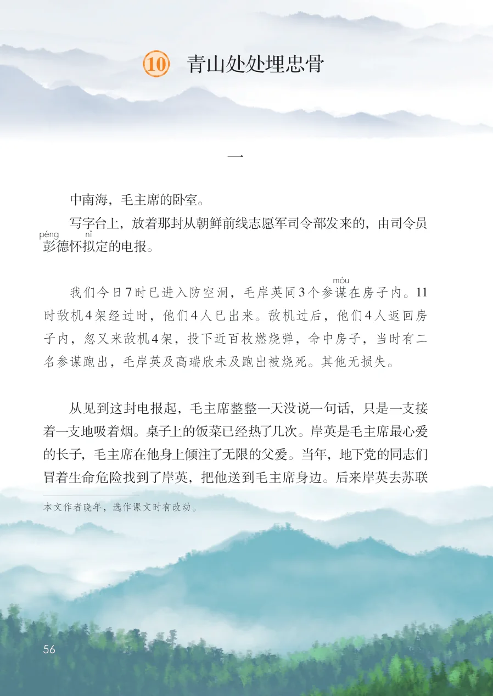
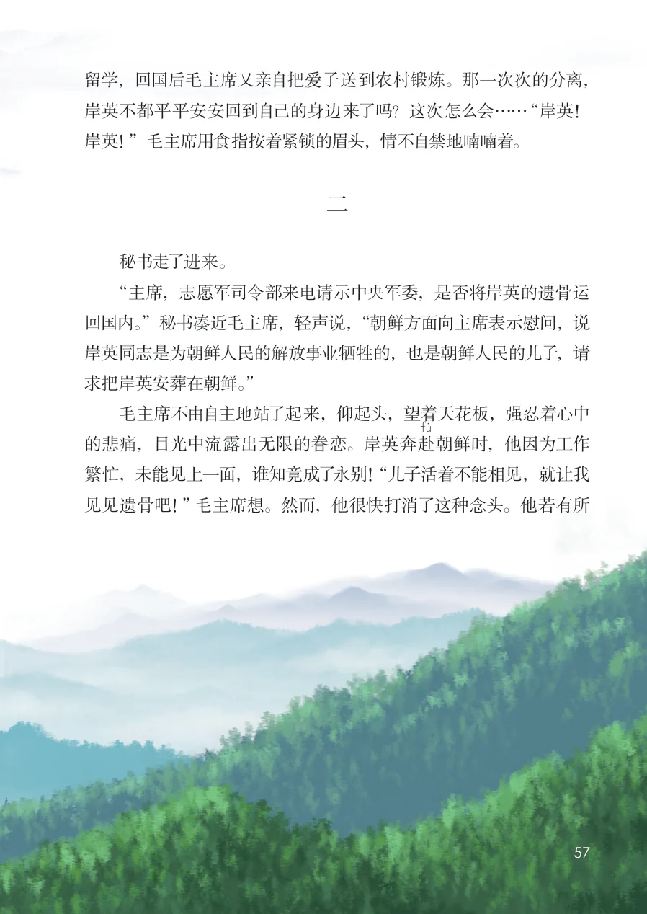
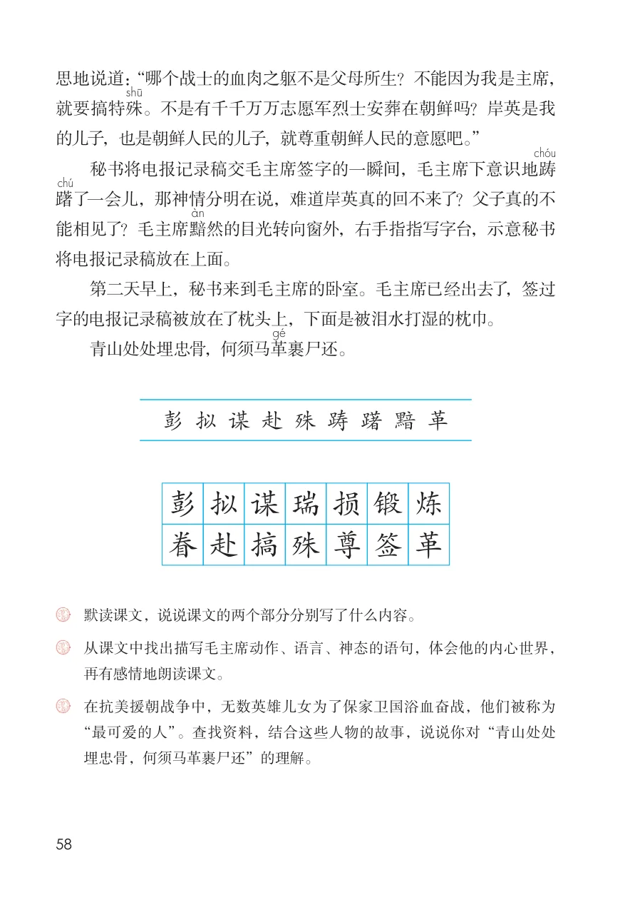

展开章节菜单
10 青山处处埋忠骨
一
中南海，毛主席的卧室。
写字台上，放着那封从朝鲜前线志愿军司令部发来的，由司令员彭德怀拟
定的电报。
我们今日7时已进入防空洞，毛岸英同3个参谋
在房子内。11时敌机4架经过时，他们4人已出来。敌机过后，他们4人返回房子内，忽又来敌机4架，投下近百枚燃烧弹，命中房子，当时有二名参谋跑出，毛岸英及高瑞欣未及跑出被烧死。其他无损失。
从见到这封电报起，毛主席整整一天没说一句话，只是一支接着一支地吸着烟。桌子上的饭菜已经热了几次。岸英是毛主席最心爱的长子，毛主席在他身上倾注了无限的父爱。当年，地下党的同志们冒着生命危险找到了岸英，把他送到毛主席身边。后来岸英去苏联本文作者晓年，选作课文时有改动。
查看教材原页（保留全部图片、注音与原始排版）

留学，回国后毛主席又亲自把爱子送到农村锻炼。那一次次的分离，
岸英不都平平安安回到自己的身边来了吗？这次怎么会……“岸英！
岸英！”毛主席用食指按着紧锁的眉头，情不自禁地喃喃着。
二
秘书走了进来。
“主席，志愿军司令部来电请示中央军委，是否将岸英的遗骨运
回国内。”秘书凑近毛主席，轻声说，“朝鲜方面向主席表示慰问，说
岸英同志是为朝鲜人民的解放事业牺牲的，也是朝鲜人民的儿子，请
求把岸英安葬在朝鲜。”
毛主席不由自主地站了起来，仰起头，望着天花板，强忍着心中
朝鲜时，他因为工作
的悲痛，目光中流露出无限的眷恋。岸英奔赴
繁忙，未能见上一面，谁知竟成了永别！“儿子活着不能相见，就让我
见见遗骨吧！”毛主席想。然而，他很快打消了这种念头。他若有所
查看教材原页（保留全部图片、注音与原始排版）

思地说道：“哪个战士的血肉之躯不是父母所生？不能因为我是主席，就要搞特殊
。不是有千千万万志愿军烈士安葬在朝鲜吗？岸英是我的儿子，也是朝鲜人民的儿子，就尊重朝鲜人民的意愿吧。”
秘书将电报记录稿交毛主席签字的一瞬间，毛主席下意识地踌躇了一会儿，那神情分明在说，难道岸英真的回不来了？父子真的不能相见了？毛主席黯
然的目光转向窗外，右手指指写字台，示意秘书将电报记录稿放在上面。
第二天早上，秘书来到毛主席的卧室。毛主席已经出去了，签过字的电报记录稿被放在了枕头上，下面是被泪水打湿的枕巾。
青山处处埋忠骨，何须马革
裹尸还。
在抗美援朝战争中，无数英雄儿女为了保家卫国浴血奋战，他们被称为
埋忠骨，何须马革裹尸还”的理解。
查看教材原页（保留全部图片、注音与原始排版）
